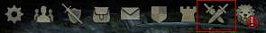
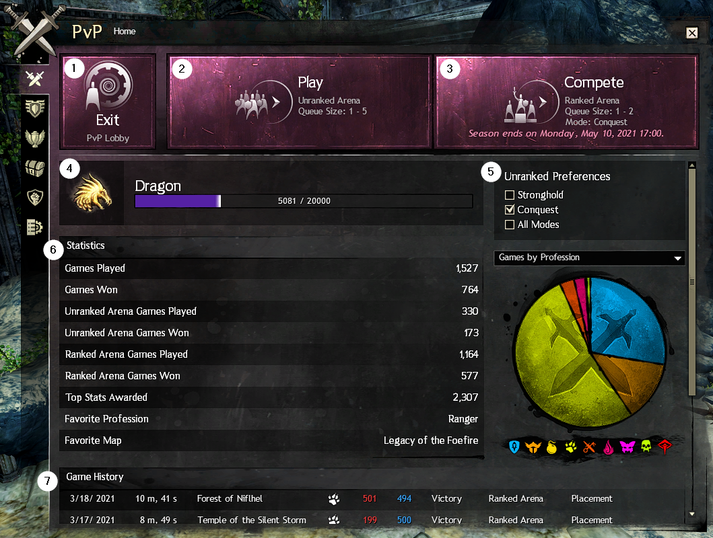
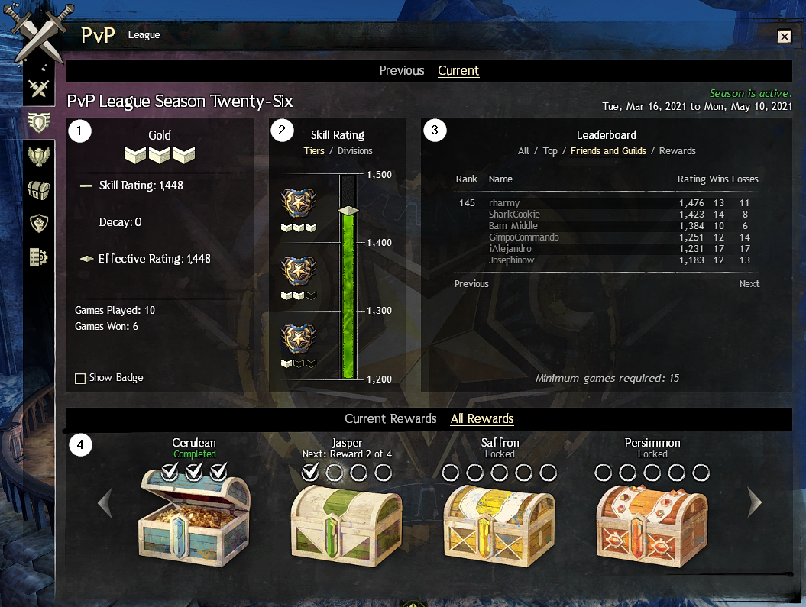
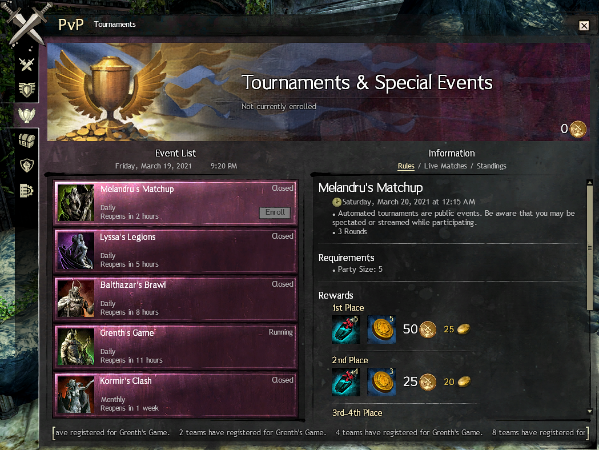
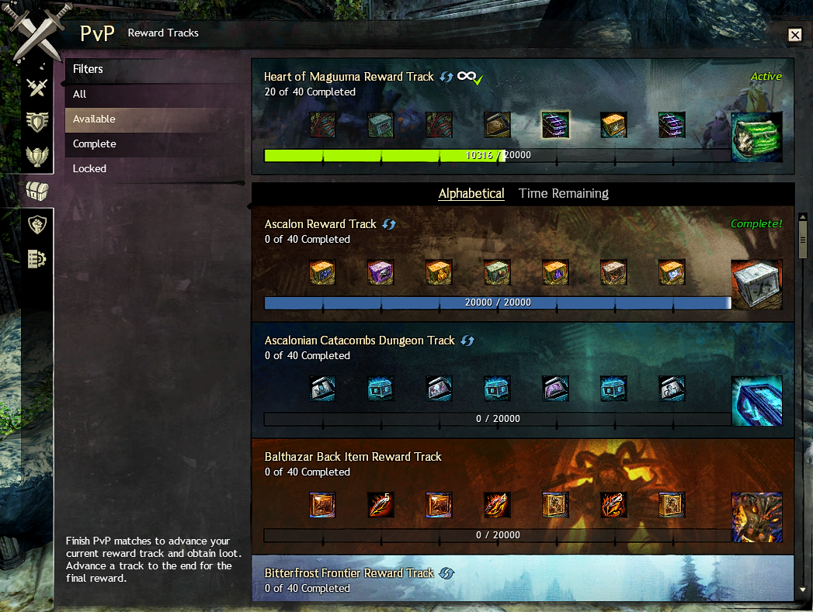
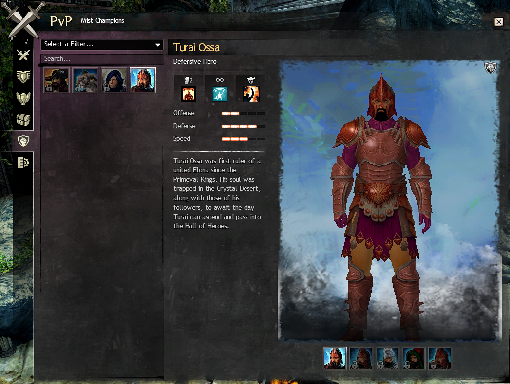
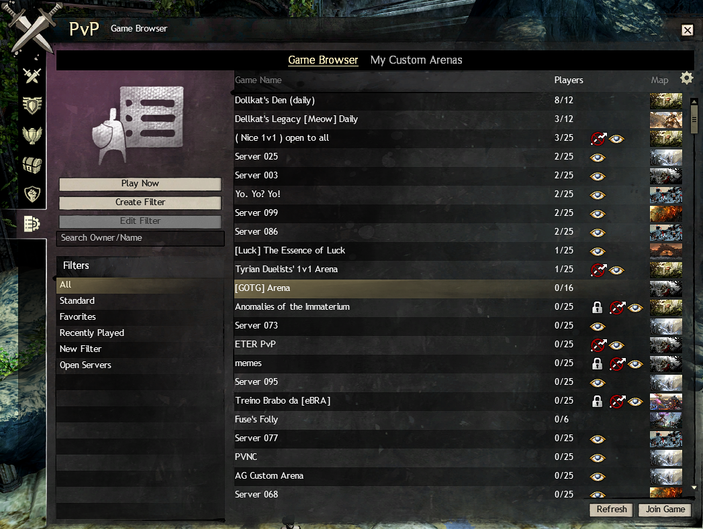

PvP Screen #

The PvP screen is opened by clicking the crossed sword button in the menu bar (see above image). The rest of this section explains elements of each of the different tabs.
Home #

1: PvP Lobby #
You can start PvP games from anywhere in Tyria, but there is a dedicated area called the Heart of the Mists. Like WvW, there’s a bank, Black Lion trader, and various vendors, both general and PvP-specific. Also like WvW, the game remembers what your build and equipment were when you last entered the Mists with that character. Leaving the mists will take you back to the zone you were last in.
There are numerous golems and NPCs in the practice area to try out your new build, and, if you’re feeling really frisky, there’s also a free-for-all arena.
There’s a lounge, but without the pass, there are no crafting stations here.
2: Unranked Arena #
The names of these arenas are wrong. This should actually be called “Unrated Arena.” You do indeed still earn rank points (your PvP “level”) in this arena, but your game will not be rated (see the League section for details).
Also, the name of the permanent daily “Daily PvP Rated Game Winner” is wrong. It should actually be called “Daily PvP Ranked Game Winner.” You can complete this daily by winning a game in the Unranked Arena.
In this arena you can enter the queue with up to a full 5-person party. You will be pitted against players of very disparate skills, and the results will not affect your rating. You also earn reward track points. This is a great place to try out new builds and play with guildies.
3: Ranked Arena #
This, too, should be called “Rated Arena.” In addition to rank points and reward track points, you also earn skirmish track pips. This is how you earn special PvP-only currencies (PvP League Tickets and Ascended Shards of Glory) used for crafting legendaries and buying ascended gear, as well as earning hefty amounts of gold, dyes, warlord armor chests, and grandmaster mark shard boxes. PvP can actually be quite lucrative.
4: Rank #
There is no limit to the number of PvP ranks you can earn, but up until level 80, every 10 levels earns you a new animal and animal-specific finisher. The order is given on the GW2 wiki. Your current numerical level is visible in the bottom left of your screen. The progress bar replaces your normal experience bar.
5: Preferences #
There are two different PvP game modes: Conquest and Stronghold (see Game Modes article for details). The unranked arena is always Conquest, but in unranked you can also play Stronghold. When you enter the Unranked Arena, it will randomly assign you to one of the modes you selected. In this screen capture, the player has chosen to only ever play Conquest mode.
6: Statistics #
As you play, the game will accumulate various statistics about your play.
7: Game History #
The results of your last 10 games will be shown here.
League #

1: Rating #
This box shows your current rating. If you don’t play for a few days, your rating starts to decay. This doesn’t really matter unless you’re trying to climb the leaderboard. It also shows your current win/loss ratio for the season.
2: Rating Scale #
This is just a graphical representation of your rating. There are five divisions: Bronze (0–900), Silver (900–1200), Gold (1200–1500), Platinum (1500–1800), and Legendary (1800+). There are typically no more than a couple of legendary players.
3: Leaderboard #
Here you can see how you stack up against other players. The “Friends and Guilds” is fun to watch. The “Minimum games required” number is simply how many games you have to play to appear on the leaderboard. That number increases as the season progresses.
4: Skirmish Track #
This is the whole reason to play in the Ranked Arena! There are six total chests. The last one is repeatable. Losing a game earns you 3–4 pips; winning, 10–11. Pips earn you dots, and dots earn you rewards. The more often you win, the faster you earn. But even if you lose all the time, you can still grind out the components you need for legendary gear.
Tournaments #

Automated tournaments run every three hours. This is not usually a place for newcomers, so you needn’t worry about this right now, but the loot can be quite attractive. Placing well in regular tournaments earns you qualifying points to enter the big monthly tournament.
See the GW2 wiki tournaments page for more details.
Reward Tracks #

All the core reward tracks you’ll recognize from WvW are here too, including the one-time-only tracks that give bonus clovers!! There are a number of PvP-specific tracks as well. More loot!
Mist Champions #

The mist champions are used in the Stronghold game mode. This is where you manage your unlocked champions.
Game Browser #

For 200 gold you can purchase your very own PvP arena. Not cheap. There are a number of arenas dedicated just to dailies that are populated by bots, but really, Unranked Arena is simply more fun.
See the Custom Arena page on the GW2 wiki for details.